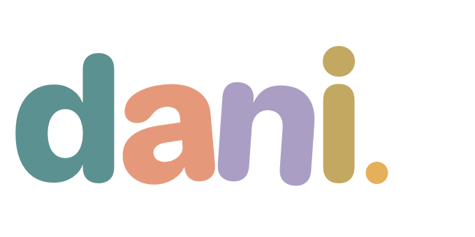

PLAY STUDIES / 002A LITTLE SQUEEZE, A LITTLE WONDER말랑한
말랑한
귤 한 조각.
쭉 당겼다가, 손을 놓아 보세요.
잡은 곳부터 말랑하게 움직입니다.
부피 유지100.0%
움직임0.00
들린 높이0.00
실험 정보
사면체 XPBD · CPU 물리 / WebGL2 렌더링
자기 충돌은 미지원입니다. 재질의 투과와 두께는 근사 표현입니다.
작은 젤리 실험실을 준비하고 있습니다.